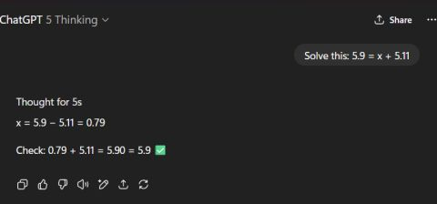

𝗪𝗵𝘆 𝗟𝗮𝗿𝗴𝗲 𝗟𝗮𝗻𝗴𝘂𝗮𝗴𝗲 𝗠𝗼𝗱𝗲𝗹𝘀 𝗦𝘁𝗿𝘂𝗴𝗴𝗹𝗲 𝗪𝗶𝘁𝗵 𝗠𝗮𝘁𝗵?
Ashmita Pandey · · AI · LLMs
𝗪𝗵𝘆 𝗟𝗮𝗿𝗴𝗲 𝗟𝗮𝗻𝗴𝘂𝗮𝗴𝗲 𝗠𝗼𝗱𝗲𝗹𝘀 𝗦𝘁𝗿𝘂𝗴𝗴𝗹𝗲 𝗪𝗶𝘁𝗵 𝗠𝗮𝘁𝗵? I have heard this question many times and even noticed it myself. LLMs are great at writing, but the moment you give them a slightly tricky math problem, they can get confused. So I looked into it, and here’s what I found. LLMs don’t actually calculate. They predict the next word based on patterns. Math is not about patterns. It’s about exact rules. So the model often gives an answer that looks right instead of doing the real calculation. Even when we ask it to show the steps, those steps are just text it has learned from examples. They are not guaranteed to be logical or correct, and one small mistake throws everything off. Numbers also behave differently from normal words, and the model doesn’t fully understand that small changes in numbers can completely change the result. Researchers are working on this by combining LLMs with proper math engines and adding checks before the final answer is given. 𝗙𝘂𝗻 𝗳𝗮𝗰𝘁: Even the most advanced LLMs sometimes get basic multiplication wrong, but they can explain quantum mechanics perfectly.
